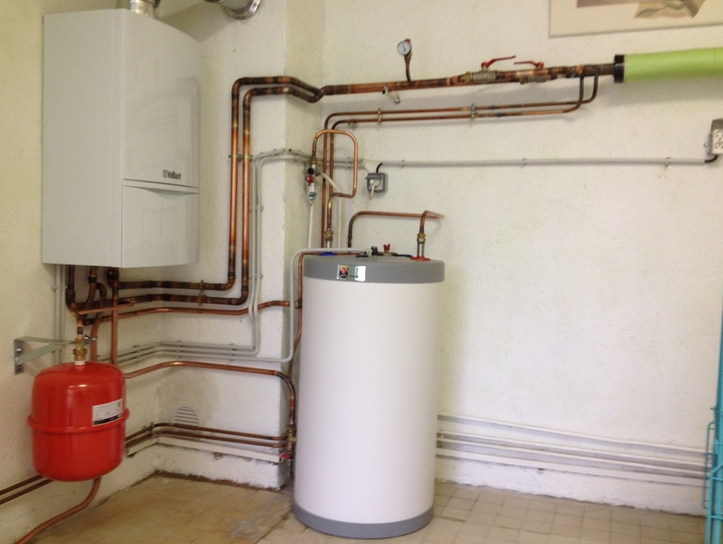
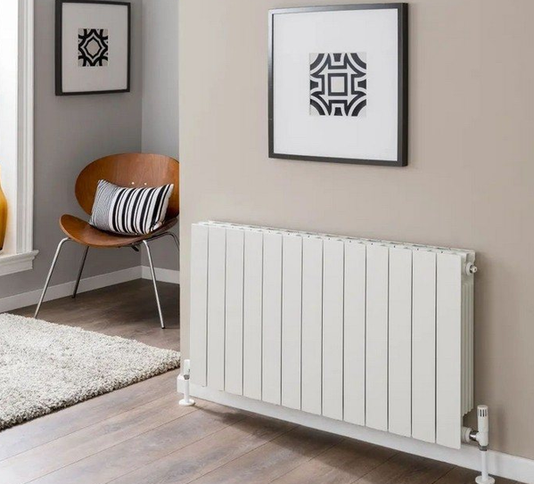
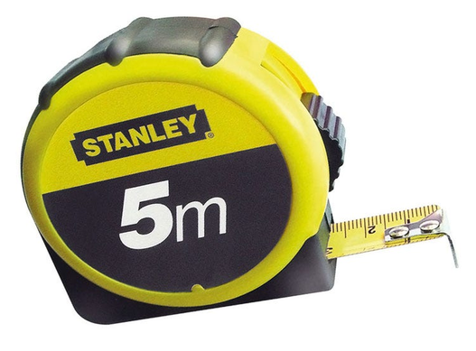
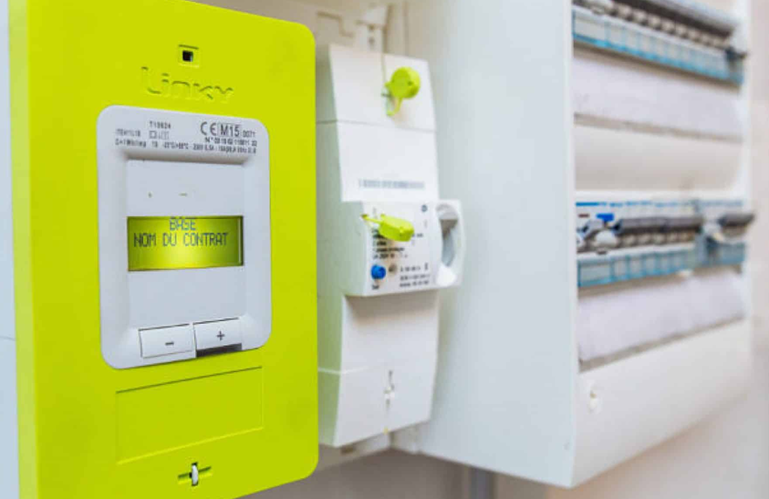
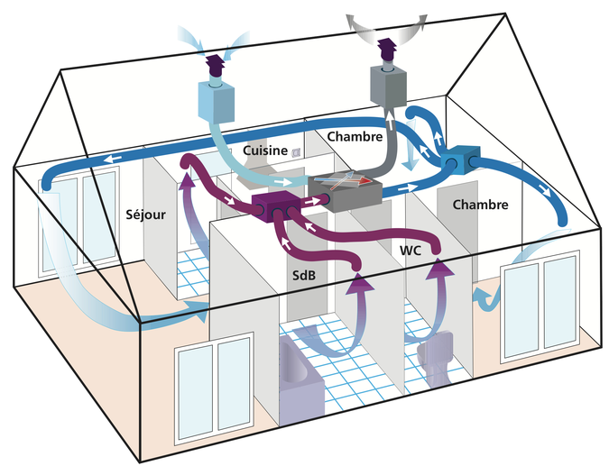

00 Séquence A · Activité 00 · Matière
Recherche d’informations
Collecter les informations sur votre habitat pour les étudier dans une démarche de technologie et de développement durable.
Collecter les informations sur votre habitat pour les étudier dans une démarche de technologie et de développement durable.
O4 - Communiquer une idée, un principe ou une solution technique, un projet, y compris en langue étrangère.
CO4.1. Décrire une idée, un principe, une solution, un projet en utilisant des outils de représentation adaptés.
 |
 |
 |
 |
 |
L’objectif de l’étude est de collecter un certain nombre d’informations sur votre habitat et de les étudier dans une démarche technologie et de développement durable.
Le dossier a été remis dans le drive à l’adresse :
https://drive.google.com/drive/folders/1Ye-8SvIiJPVfJ_3Rz-U6vdpnDCHISSm5
Il intègre aussi les fiches outils qui vont constituer des ressources pour vous permettre de poursuivre votre travail d’investigation.
Il est demandé dans un premier temps de réaliser le croquis de votre habitation. Chez vous, vous devrez collecter les informations suivantes :
Sur la chaîne YouTube :
youtube.com/watch?v=WLsYSTWhWd0 (playlist « dannid »)
Ce site a été réalisé par Abdellah CHELOUAH.